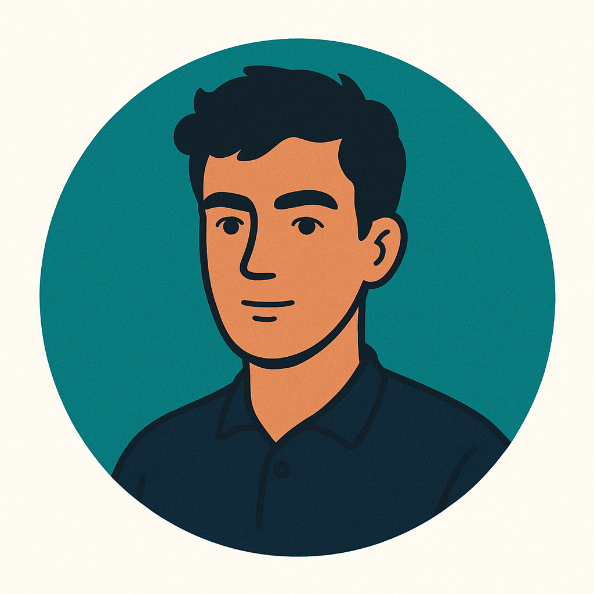

I'm a recent University of Pittsburgh graduate and an aspiring UI/UX Designer. I design clean interfaces and immersive experiences that bring together form and function.
I combine design tools and frontend development to craft meaningful, intuitive digital products.
